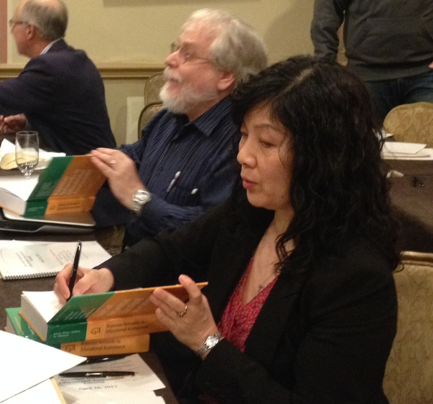
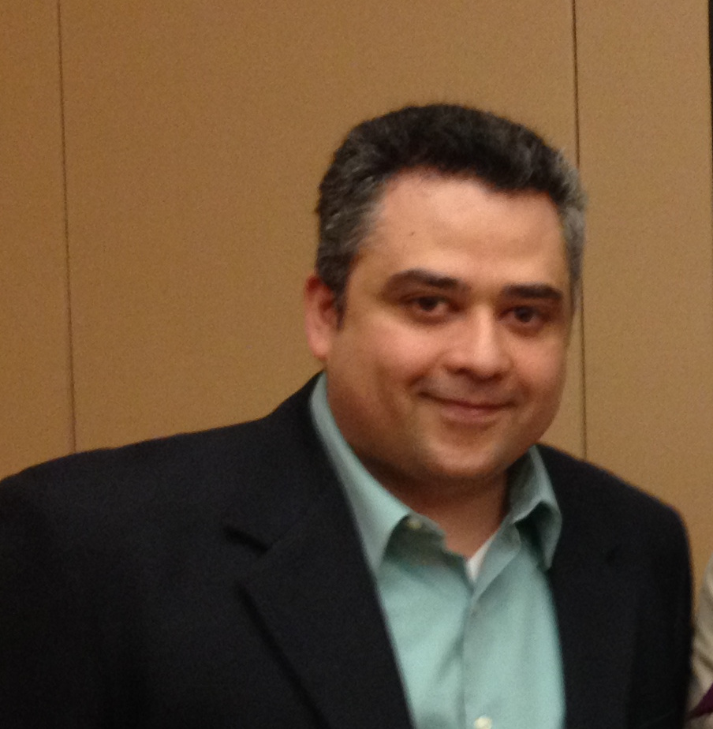

About
Origin and History
This website is the latest iteration of the notes for the long running series of tutorial Bayesian Networks in Eductional Assessment, which has run at the National Committee for Measurement in Education (NCME) since 2002. It complements the book Bayesian Networks in Educational Assessment available from Springer.
The original version was developed by Russell Almond, Bob Mislevy, Duanli Yan and David Williamson with assistance from Linda Steinberg and supported by Educational Testing service.

Over the years, others have contributed materials. In particular, Russell Almond (now at Florida State University), Roy Levy (Arizona State University) and Diego Zapata (Educational Testing Service).

Special thanks to Val Shute (ETS and FSU) for letting us used ACED data and models in this tutorial. ACED development and data collection was sponsored by National Science Foundation Grant No. 0313202. Complete data available at: http://ecd.ralmond.net/ecdwiki/ACED/ACED
Current Presenters
 Russell Almond is an Associate Professor of Measurement and Statistics at Florida State University. He has long been interested in the intersection of artificial intelligence and statistics. With Bob Mislevy and Linda Steinberg he developed the initial version of evidence-centered assessment design (ECD). His home page is at https://ralmond.net, and he adminsters the machine https://pluto.coe.fsu.edu. His R packages are available through https://ralmond.r-universe.net and the source code is at https://github.com/ralmond, and his Mastadon handle is
Russell Almond is an Associate Professor of Measurement and Statistics at Florida State University. He has long been interested in the intersection of artificial intelligence and statistics. With Bob Mislevy and Linda Steinberg he developed the initial version of evidence-centered assessment design (ECD). His home page is at https://ralmond.net, and he adminsters the machine https://pluto.coe.fsu.edu. His R packages are available through https://ralmond.r-universe.net and the source code is at https://github.com/ralmond, and his Mastadon handle is @ralmond@mlhangout.

Duanli Yan is a director of data analysis and computational research in the Research and Measurement Science area of Research & Development division at ETS. There she has led automated scoring model building and evaluation. She was the statistical coordinator responsible for the EXADEP™ test and the TOEIC® institutional programs. Yan was a recipient of the 2011 ETS Presidential Award, 2013 NCME Brenda Loyd Outstanding Dissertation Award from the , 2015 IACAT Early Career Award, and 2016 AERA Division D Significant Contribution to Educational Measurement and Research Methodology Award. She is a coauthor on the following books: Bayesian Networks in Educational Assessment, Computerized Multistage Testing: Theory and Applications, and Computerized Adaptive and Multistage Testing with R.

Diego Zapata-Rivera Diego Zapata-Rivera is a distinguished presidential appointee at ETS. He earned a Ph.D. in computer science (with a focus on artificial intelligence in education) from the University of Saskatchewan in 2003. His research at ETS has focused on the areas of innovations in score reporting and technology-enhanced assessment including work on adaptive learning and assessment environments, and game-based assessments. His research interests also include Bayesian student modeling, open student models, conversation-based tasks, caring assessment, virtual communities, authoring tools, and program evaluation. He has produced more than 100 publications including journal articles, book chapters, and technical papers. He has served as a reviewer for several international conferences and journals. He has been a committee member and organizer of international conferences and workshops in his research areas. He is a member of the editorial board of User Modeling and User-Adapted Interaction, an associate editor for AI for Human Learning and Behavior Change, and a former associate editor of the IEEE Transactions on Learning Technologies. Most recently, he has been invited to contribute his expertise to projects sponsored by the National Research Council, the National Science Foundation, NASA, and the U.S. Army Research Laboratory.
Acknowledgements
We have a lot of people to thank in the making of this tutorial. Obviously Bob and David played big roles in the development of the original tutorials (and we are still using some of their slides). They also helped with the planning for this 2nd edition. Linda Steinberg was extremely important in the original development of both evidence-centered assessment design and many of the original applications using Bayesian networks, particularly Biomass. Here project management skills drove us to find practical problems for many issues. Val Shute has generously offered us the Bayesian networks and data from here ACED project to use as examples. Brent Boerlage @ Norsys has generously provided us with time-limited keys for Netica (although many of the class exercises can be done with the student version). More information about both the Netica GUI and API (needed for RNetica to work) can be found at http://norsys.com/. ETS has generously covered the cost of printing and shipping the paper copies of the slides and Springer has been helpful in arranging for copies of the book Bayesian Networks in Educational Assessment to be available at the tutorial. Last but not least, we would like to thank the NCME staff and volunteers for arranging a host of important details without which this would be a much less pleasant version.
Finally, we want to thank all of you who have come to the tutorial over the past decade. Your questions and feedback have helped us mold the tutorial to better meet the needs of the NCME audience. We hope that you will continue to provide us with questions and feedback.
Support
Development of the original tutorial was supported by the ETS Research Allocation.
Development of the Peanut suite of tools has been supported in part by
- Bill & Melinda Gates Foundation grant “Games as Learning/Assessment: Stealth Assessment” (#0PP1035331, Val Shute, PI)
- National Science Foundation grant “DIP: Game-based Assessment and Support of STEM-related Competencies” (#1628937, Val Shute, PI)
- National Scient Foundation grant “Mathematical Learning via Architectual Design and Modeling Using E-Rebuild.” (#1720533, Fengfeng Ke & Russell Almond, PIs)
- Institute of Educational Statistics Grant: “Exploring adaptive cognitive and affective learning support for next-generation STEM learning games.” (#R305A170376-20, Val Shute and Russell Almond, PIs
Legal Stuff
Slides and handouts for the original tutorial are copyright 2002—2015 Educational Testing Service. Sessions I and II are copyright 2017-8 Educational Testing Service. Session III is copyright 2017-8 Russell G. Almond and includes material from the 2002—2015 used by permission of ETS. Session IV is copyright 2017-8 Roy Levy.
These materials are an unpublished, proprietary works of their respective rights holders. Any limited distribution shall not constitute publication. This work may not be reproduced or distributed to third parties without prior written consent. Submit request for the ETS material (Sessions I and II) through http://www.ets.org/legal/copyright.html, and for Sessions III to Russell Almond (ralmond@fsu.edu) and Session IV to Roy Levy (roy.levy@asu.edu).